Curtis E. Dyreson
Department of Computer Science
James Cook University
Townsville, QLD 4811
Australia
A search engine can index a concept that appears entirely on a single page. But concepts can span several pages. For instance, a page on trees may be linked to a page on lecture notes for a data structures course. If the trees page does not specifically mention lecture notes, then a search engine search for lecture notes on trees will, at best, only partially match each page.
In this paper we describe a practical system, called a Jumping Spider, to index concepts that span more than one page. We assume that a multi-page concept is created by a concept-path, consisting of some number of hyperlinks, that transits through pages with specific content. For instance, there must be a concept-path from the lecture notes page to the trees page to create the lecture notes on trees concept. The concept-paths must be relatively few (certainly much fewer than the overall number of paths in the WWW) or the cost of the index will be too great. At the same time, the paths must be easily identified, so that they are capable of being automatically computed and indexed quickly. Finally, the paths must be viable, in the sense that they really do connect multi-page concepts.
The Jumping Spider restructures the WWW graph (within the index) to create a graph consisting only of concept-paths. The restructuring only permits paths from from pages in a parent directory to any transitively connected page in a child directory, or over a single link that connects two unrelated directories.
Sally is teaching a course in data structures. She is currently lecturing about trees and is interested in how the material is taught elsewhere. Sally decides to look on the WWW to find the relevant information. There are two kinds of tools that Sally can use: search engines and WWW query languages.
Search engines are the de facto standard for finding information on the WWW. While there are a great variety of search engines they all share the same basic architecture. A search engine consists of three components: a robot, an index, and a user-interface. The robot periodically traverses the WWW. For each page that it finds, the robot extracts the content for that page, usually a set of keywords. The keywords are used to update the index, which is a mapping from keywords to URLs. A user searches by inputting one or more keywords into the user-interface. The user interface consults the index and retrieves the URLs of pages that best match the given keywords. The result are often ranked by how well the keywords match. Search engines differ primarily in how content is extracted, how much of the WWW they search, and how keywords are matched and results ranked.
An important feature of a search engine is that the architecture is optimized to respond quickly to user requests. In particular, the user only interacts with the index. The WWW search, which is performed by the robot, is entirely separate. This architecture recognizes that searching the WWW is slow, and that robots impose an overhead on network bandwidth. We will call an architecture where the WWW search is distinct from a user query a static architecture.
The primary drawback to search engines (for our purposes) is that they only index single pages. Sally wishes to find the lecture notes on trees for a data structures course. In most courses, each lecture has its own page, separate from both a lecture notes page and course home page. Since the search terms do not appear together on a single page it is unlikely that the notes could be located by using a combination of all of the above descriptions (e.g., trees AND lecture notes AND data structures). On the other hand, using just a few of the terms (e.g., just trees) would find too many irrelevant URLs, and fail to isolate the notes within a data structures course.
In order to find the appropriate notes using a search engine, Sally would have to employ a two-pronged strategy. First she would use a search engine to find data structures courses. Then she would manually explore each course to find lecture notes on trees. Sally is unhappy with this strategy since it has a manual component. But she can use a WWW query language to automate the exploration of each course.
The database research community has recently developed several languages to overcome search engine limitations. Languages such as WebSQL [MMM96, AMM97, MMM97], W3QL [KS95], and WebLog [LSS96] combine content predicates to search a page with path expressions to traverse links between pages. A content predicate tests whether a page or link to a page has some specified content. A path expression is a description of the path that connects pages.
Sally chooses to use WebSQL to find the notes. She decides on the following page navigation strategy. Starting with pages on data structures, navigate to pages which mention lecture notes that are within three links, and from those pages, navigate at most two links to find pages on trees. A WebSQL query for this navigation strategy is given in Figure 1.
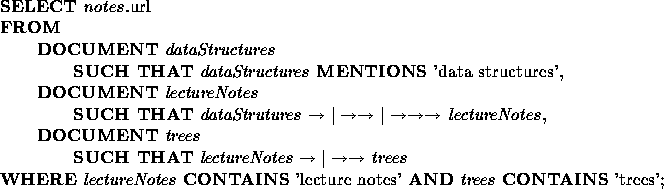
The FROM clause stipulates that the Uniform Resource Locators (URLs) associated with `data structures' are retrieved from a search engine (by using a MENTIONS to build the DOCUMENT dataStructures). From this set of pages, pages that are within three (local) links are visited as specified by the path constraint `
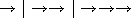
'. The WHERE clause adds (with a CONTAINS predicate) the constraint that for each page visited, navigation should continue only from those that contain the string `lecture notes'. Finally from those pages, two links can be followed to reach the pages on `trees'.Sally is making a fundamental assumption that pages are usually linked to conceptually-related information. For instance, a user will likely assume that traversing one link from a page on data structures will access information somehow related to data structures. So the graph of (hyper)links is a (very) rough approximation of the conceptual relationships between pages. In general, however, this assumption is false since there are usually some links on the page that do not obey this rule, such as a link to a page maintainer's home page or a link back to a central entry page.
Sally must also guess the maximum number of links that can separate related concepts. She guesses at most three links between one pair and at most two links between another. Sally may not realize that it is very important for her to be as conservative as possible in her guesses since the number of links she uses in a path expression has a huge impact on the performance of her query. The query explores
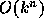
links in the graph, where k is the number of links from a page and n is the number of links in the path expression, in other words the size of the graph explored is exponential in the number of links in the path expression. At the same time, Sally should not be too conservative since she might miss the desired information.For the data structures notes at James Cook University Sally has guessed wrong since the lecture notes for all of the courses taught by the department are within three links of the data structures home page; it is one link back to a list of courses, then one link to a course home page, and finally, one to the lecture notes for that course. Paths of length three also exist from the data structures course through lecturers' home pages to notes in other courses.
In general, in order to direct and constrain the navigation in a WWW query using path expressions Sally needs to have some a priori knowledge of the topology of the WWW in the region of desired content. In this case she has to know roughly how many links exist between pieces of information. Unfortunately, content is only loosely related to the graph topology of the WWW and although the user will likely be perfectly capable of specifying the content, the user will usually not have a priori knowledge of the specific topology (in the terminology of Lacroix et. al [LSCS97], the user has ``zero knowledge'' of the topology).
One other limitation is that current implementations of WWW query languages do not separate the search phase from the query. We will call architectures that search the WWW during a query dynamic. One advantage of dynamic architectures is that they do not become dated since the current version of the WWW is used during the search. But dynamic architectures have a high query evaluation cost since the WWW is explored during a query.
In this paper we describe a hybrid system, called a Jumping Spider, that combines search engine and WWW query language features. Our position is that WWW query languages offer too powerful a mechanism for searching the WWW while search engines are too weak. The Jumping Spider is a desirable medium between the two approaches. Like WWW query languages, a Jumping Spider uses paths in the WWW to find concepts that span pages. But there are three key differences between a Jumping Spider and a WWW query language.
In the next section we describe how to build a concept graph that stores each link in a concept-path. The Jumping Spider has been implemented and an example is presented. Finally we discuss related work and present a summary of this paper.
The motivating query presented in Section 1 is a general kind of query, which we will call a concept-refinement query. In this kind of query a large concept space is identified initially. The concept space is then refined or ``narrowed'' in subsequent steps. In the motivating query Sally first requested information on data structures courses. Then that information space was narrowed to lecture notes, and finally to trees.
What this suggests is that a concept-path must similarly refine or narrow the concept space. The WWW graph, however, does not have any such narrowing. Links can lead anywhere, they do not naturally lead from more general to more specialized information. Instead, a narrowing graph structure must be defined on top of the underlying WWW graph. In the remainder of this section we present an easily computable structure which is used by the Jumping Spider.
The structure we propose is based on URLs. A URL for a page pinpoints the page's disk location. For example, the URL
http://www.cs.jcu.edu.au/ftp/web/Subjects/Informal.htmlspecifies that the page is in the ftp/web/Subjects directory relative to the server's root directory.
Because the URL is related to the hierarchy of directories on a disk, it offers a primitive mechanism by which it is possible to make a initial guess as to which information is general and which is specialized. A general rule of thumb is that information in subdirectories is more specialized with respect to the information in parent directories. This is the common ``cultural'' convention for dividing information between parent directories and subdirectories in both WWW and non-WWW information repositories. So for instance, we might infer that the information in
http://www.cs.jcu.edu.au/ftp/web/Subjects/index.htmlis ``more general'' than that in
http://www.cs.jcu.edu.au/ftp/web/Subjects/cp2001/index.htmlsince the former resides in a parent directory of the latter. We should note that we are not stating that the URL itself be used to infer the content of a page, since the name of the directory is often entirely unrelated to the content; few would know that cp2001 means a data structures course. Rather we are suggesting that some general/specialized relationship holds between the pages, at least, such a relationship is assumed by whomever maintains the pages. A page in a subdirectory contains information (whatever it may be) that is more specialized than that contained in a page in the parent directory (whatever that may be). Certainly, it will not always be the case that this is so, but it is a useful, cheap, and simple heuristic. We note that a similar heuristic is used by WebGlimpse [MSB97] (extends glimpseHTTPs indexing of a directory) and also by Infoseek [Inf] (in grouping URLs with common prefixes).
This assumption gives us enough information to distinguish different kinds of links.
This classification is incomplete since links between pages within the same directory have yet to be classified. Intra-directory links are classified according to the following rules.
Figure 2 shows a part of the WWW graph in the region of the lecture notes on trees. Figure 3 shows how the links in this region are classified. In the figure, back links have been eliminated. Side links, such as the one to the lecturer (curtis) are shown with dashed lines. Down links are shown with solid lines.
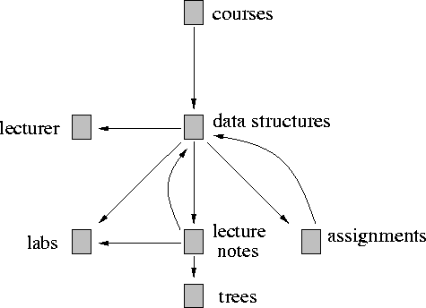
Figure 2: Part of the WWW graph in the region of the lecture notes on trees
Having identified each kind of link we construct a concept graph from the WWW graph using the following rules.
While the concept graph is larger than the WWW graph, the increase in size is modest. Rule 1 eliminates some links, while rule 2 adds links for paths that are either completely within a single directory ``tree,'' or have at most one link outside of that tree are retained. This adds
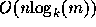
links to the concept graph, where n is the number of nodes in the WWW graph, k is the branching factor in the directory tree, and m is the number of nodes in a single server. In general n will be on the order of millions of nodes, while m will be in the tens of thousands and z will be less than ten.
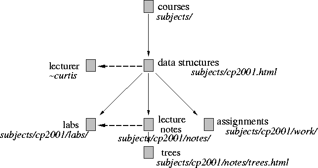
Figure 3: The links classified, solid lines are down links,
dashed lines are side links (back links have been eliminated)
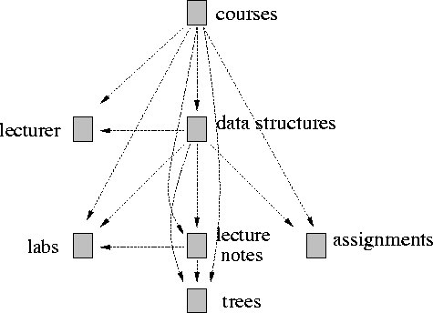
Figure 4: The resulting concept graph
The benefit to creating the concept graph is that it eliminates the necessity of performing a dynamic search of the WWW graph to refine a concept. This saves time during query evaluation at the cost of storing a larger graph, although the size of the concept graph is modest, just slightly above linear in the size of the WWW graph.
User's query for concept-paths in the concept graph by giving a list of keywords. A single jump (link) is permitted between each keyword. Below we list some example queries.
data structures lecture notes trees
lecture notes trees
lecture notes trees
JCU data structures lecture notes trees
JCU data structures lecturer
JCU subjects lecturers
The query evaluation architecture is a (relational) database, which is described in detail elsewhere [Dyr97]. The database has two tables: a SearchEngine table which maps concepts to URLs, and a Reachable table which is the set of edges in the concept graph. We anticipate that the size of the concept graph will limit the number of servers that a Jumping Spider can index. For instance, a Jumping Spider could be constructed for information available from the servers at James Cook University, or for the servers at all the universities in Queensland, or just for information in computer science courses, available from universities world-wide.
A query consists of a list of keywords. The query is evaluated by performing a sequence of joins between tuples in the SearchEngine and Reachable tables. The number of joins is proportional to the number of keywords in the query. For example, to find the lecture notes on trees in a data structures course the following relational algebra expression would be evaluated
If we assume that each of the tables is indexed appropriately, then the restrictions ( ) are cheap, and the joins are all hash joins, so the overall cost of the query will be largely determined by the size of the output for each selection and the resulting join with the Reachable table. In other words, if there are many data structures pages then the cost of the query will be relatively high since the number of reachable pages (jumping one link) will be high. In the worst case this will be the entire Reachable table, but in practice it will be a very small portion of that table. The primary difference between this navigation strategy and that in WWW query languages is that only a single link is ever traversed between concepts, whereas in a WWW query language the transitive closure of the WWW graph may have to be computed.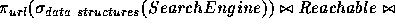
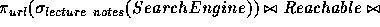
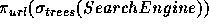
The concept graph can be dramatically reduced in size by assuming that a down link exists from a page to all pages in either that directory or a subdirectory. This assumption has two benefits. First, it leaves only side links to unrelated directories in the concept-graph. We note that Altavista [Alt] already stores these links, so this strategy could be implemented using Altavista directly (we plan to do so shortly). Second, it improves the speed of query evaluation by reducing the size of the Reachable table.
Building the Jumping Spider is relatively straight-forward. Like a search engine, a Jumping Spider, is a three-component architecture consisting of a robot, two tables, and a user-interface. The robot traverses the WWW and gathers information for a search engine index and the concept graph. The index and graph are stored as the pair of SearchEngine and Reachable tables.
The Jumping Spider architecture has been implemented in Perl, version 5.003. We chose Perl to facilitate easy distribution. The code and an example interface are available at the following URL.
http://www.cs.jcu.edu.au/~curtis/htmls/JumpingSpider/demo.html.The user-interface prompts the user for a set of keywords as shown in Figure 5. The result of evaluating the example query using a Jumping Spider for the servers at James Cook University is shown in Figure 6.
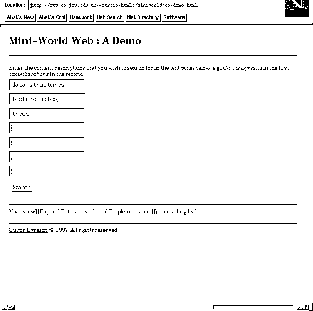
Figure 5: An example interface to the Jumping Spider (part of a Mini-World Web)
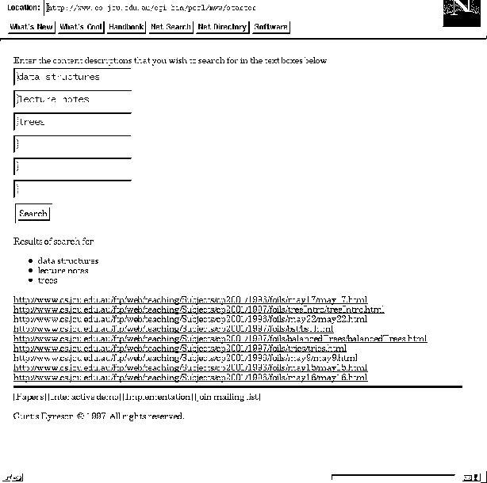
Figure 6: The output for the motivating query
W3QL [KS95], WebLog [LSS96], WebSQL [MMM96, AMM97, MMM97], and AKIRA [LSCS97] are query languages that have been designed specifically to retrieve information from the WWW. Each of these languages supports sophisticated path expressions. AKIRA also supports ``fuzzy'' navigation whereby a user can retrieve information ``near'' to a particular page. In contrast, a Jumping Spider uses concept-refinement and lack all path expressions to direct and constrain a query. We believe that many WWW queries will be concept-refinement kinds of queries and that, for these queries, a Jumping Spider is more ``user-friendly.''
W3QL, WebLog, WebSQL, and AKIRA each have a dynamic query evaluation architecture in which a query will dynamically traverse the WWW. A dynamic architecture has several benefits. The most recent version of the constantly changing WWW graph is always used. The architecture is scalable since no large tables need to be computed or stored. A rich set of content predicates can be supported since content is extracted dynamically (WebLog and AKIRA have extensive sets of content predicates). Dynamic pages (e.g., pages generated by CGI scripts) can be explored, which W3QL supports. In contrast, we propose a static architecture. Prior to query evaluation, a subgraph of the WWW is traversed and the graph stored in Reachable and SearchEngine tables. These tables optimize query evaluation within the subgraph. Our belief is that the user will be willing to use a slightly out-of-date WWW graph and sacrifice the other benefits of a dynamic architecture if doing so helps to improve the speed of query evaluation.
We share with WebSQL a practical focus both on the issue of cost and the means to control that cost by having different kinds of links. WebSQL distinguishes between local and global links. We distinguish between side, down, and back links. WebSQL estimates the cost of a query as a function of the number of global links in a path expression. We use side links to limit the cost of a query.
Semi-structured query language have also been applied to the WWW [Bun97, BDHS96, MAG 97, FFLS97]. A semi-structured data model consists of a graph that is a hierarchy with a well-defined root branching to data values through a sequence of ``role edges.'' A semi-structured query can be thought of as a regular expression over an alphabet of role descriptions; the query is evaluated by matching the regular expression against the role descriptions on a path. Unlike these papers, we focus on the issue of creating a semi-structured data model from the unstructured information in the WWW. A straightforward approach would make a one-to-one mapping between hyper-links in the WWW and links in a semi-structured data model. Our approach is to remove some links (back links) and adding a number of links (all reachable down links). A further difference is that the concept graph described in this paper is neither a hierarchy nor has a root, queries can start from anywhere within the graph.
Finally, a related research area is that explored by WebGlimpse [MSB97]. WebGlimpse indexes pages within a ``neighborhood'' of a given page. The neighborhood can be a region of the WWW graph, such as the region within two links of a given page. In this paper, the neighborhood is a directory hierarchy (like glimpseHTTP). But the focus of this paper is on indexing jumps between neighborhoods. Essentially the index build by glimpse is a SearchEngine table in our implementation.
In this paper we presented a Jumping Spider, which is a tool to find information on the WWW. A Jumping Spider adds a limited, but desirable kind of WWW query language search to a search engine. The heart of a Jumping Spider is a concept graph that has links which lead from more general to more specialized information. We discussed how to build this graph by identifying different kinds of links in the WWW graph and restructuring the graph appropriately. Our strategy uses a simple heuristic based on URLs. We plan to investigate other heuristics in future. Whatever heuristic is used, the key insight in this research is that the WWW graph should be massaged to improve the speed of query evaluation when using path expressions. We showed that the Jumping Spider implementation has an efficient, architecture which requires no changes to the WWW itself, and utilizes standard relational database technology to evaluate a query.